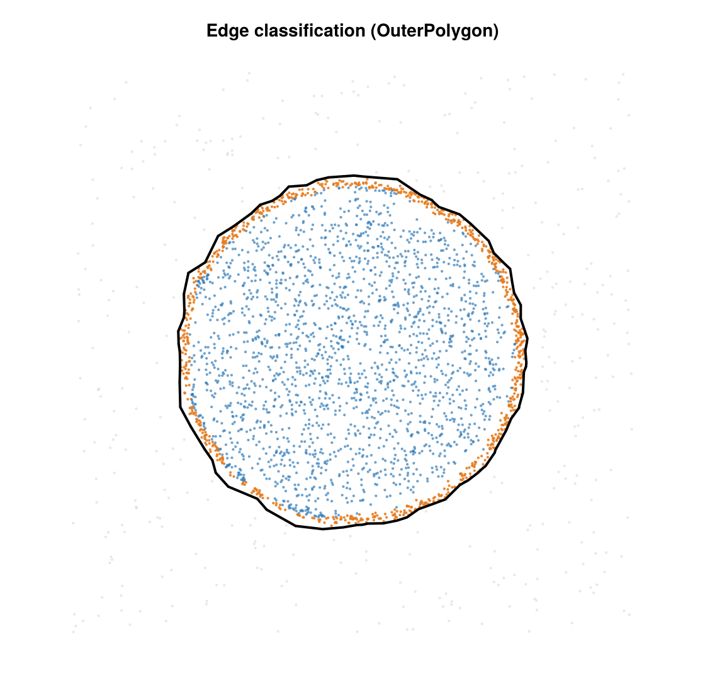

Edge / Membrane Classification
Classify each 2D SMLM emitter as :outside, :membrane, or :interior — the off-cell background, the cell-boundary band, and the cell interior. The verb classify_emitters is a peer of the package's cluster / cluster_statistics: the concrete config type selects the cell-gate strategy by dispatch, and the result is an EdgeClassifyInfo. A field of view may hold more than one cell — the published boundary is a multi-cell mask.

A synthetic cell classified into interior (blue), membrane (orange), and outside background (gray).
API
smld_out, info = classify_emitters(smld::BasicSMLD, cfg::AbstractEdgeClassifyConfig)
info = classify_emitters(x_um, y_um, cfg::AbstractEdgeClassifyConfig; fov_um)- SMLD form (pipeline-facing,
(out, Info)convention): returns the smld with the published mask threaded intosmld.metadata["edge_cells"](aMultiCellMask) and the dominant cell's outer ring intosmld.metadata["edge_outer_polygon"](back-compat / Hopkinsregion = :metadata), plus theEdgeClassifyInfo.fov_umis taken fromsmld.camera.pixel_edges_x/y. The per-emitter class is not mirrored into metadata — it lives ininfo.class, read viain_cell(info)/interior_mask(info). (A per-emitter side-list in metadata would silently desync the moment a downstream step subsets emitters; only the geometry — safe under subsetting — is mirrored.) - Coordinate form (computational core): returns the
infodirectly.fov_um = (xmin, xmax, ymin, ymax)in µm (accepts anyRealtuple).
Concept
The pipeline is shared across configs; only the first step (the cell gate) is config-specific:
- Cell gate — decide which localizations are cell vs. empty coverslip (per-config, below).
- Relative-density gate — drop isolated outlier whiskers whose local count is below
core_frac ×the cell median (relative, so it self-scales with density;0disables it). - Multi-scale adaptive alpha-shape — build boundary loops with a per-triangle α (below).
- Multi-cell mask — group the loops into cells with
build_mask. - Per-emitter labeling —
:interiorinside a cell,:membranewithinmembrane_nmof a real cell edge (FOV-cut boundary segments are excluded, so a field-of-view cut is never mislabeled membrane),:outsideotherwise.
Multi-scale adaptive α
With alpha_adaptive = true (default), each Delaunay triangle T is kept iff its circumradius is at most
\[\alpha(T) = \min\!\Big(\; s \cdot \tilde d_\text{local}(T),\;\; \max(\alpha_\text{nm},\; s \cdot \tilde d_\text{cell}) \;\Big),\]
where s = alpha_scale, $\tilde d_\text{local}(T)$ is the median alpha_knn-th nearest-neighbor spacing of T's three vertices, $\tilde d_\text{cell}$ is that spacing's per-cell median, and $\alpha_\text{nm} = alpha_nm$. The local term (first argument) scales to the local point spacing (∝ 1/√ρ): α shrinks where the cloud is dense — carving real concavities — and grows where it is sparse — bridging inter-clump gaps. The conservative envelope (second argument) caps how far α can grow, rejecting far-reaching low-density-noise protrusions, while its alpha_nm floor stays loose enough to hold a genuinely diffuse cell background together. Because it is a min, the cap can only remove triangles from the local shape, never add bridges. Setting alpha_adaptive = false uses a single fixed α = alpha_nm.
Multi-cell mask
build_mask turns the kept loops into a MultiCellMask (a Vector{CellPolygon}): it splits self-touching loops into simple rings, groups outer rings with any enclosed holes by nesting parity, drops debris smaller than min_cell_frac × the largest cell's area, and orders the cells largest-first (so cells[1] is the dominant cell). Each CellPolygon has an outer ring plus optional internal holes; keep_internal (default false) fills internal voids into solid cells, true carves them out. When keep_internal = true, min_hole_frac (default 0) drops any hole smaller than min_hole_frac × its cell's outer area — a scale gate that keeps genuine internal voids while filling sub-cell texture (e.g. inter-cluster gaps on dense cells, which the adaptive α-shape would otherwise carve into hundreds of spurious holes) back into the interior. in_region(x, y, mask) tests membership and region_area(mask) sums the enclosed area. The same MultiCellMask is accepted directly as a Hopkins observation window.
Strategies (configs)
Each config is a <: AbstractEdgeClassifyConfig (sibling of AbstractClusterConfig) holding only its own parameters; fields are lowercase, validated at dispatch entry. Both share the mask-pipeline parameters (core_frac, core_radius_nm, alpha_adaptive, alpha_knn, alpha_scale, keep_internal, min_cell_frac, min_hole_frac) and differ only in the gate.
OuterPolygonConfig
Fixed multi-K k-NN density gate → multi-scale alpha-shape mask → point-in-region + membrane_nm band.
| field | default | unit | meaning |
|---|---|---|---|
alpha_nm | 300 | nm | envelope floor / fixed α when alpha_adaptive=false |
membrane_nm | 100 | nm | membrane band width inboard of a cell edge |
fov_trunc_tol_nm | 150 | nm | FOV-truncation detection tolerance |
k_list | (16, 128) | — | k-NN K values for the multi-K density gate (intersection) |
rho_k_thresh | 200 | µm⁻² | per-K density gate threshold |
core_frac | 0.10 | — | relative-density gate: drop < frac × median (0 disables) |
core_radius_nm | 600 | nm | relative-gate neighborhood radius |
alpha_adaptive | true | — | multi-scale α (local carver ∩ per-cell envelope) |
alpha_knn | 5 | — | k for the adaptive-α length scale |
alpha_scale | 2.0 | — | ×local k-NN (carver) and ×cell-median (envelope) |
keep_internal | false | — | keep internal holes (else solid cells) |
min_cell_frac | 1/3 | — | drop cells < frac × largest (0 keeps all) |
min_hole_frac | 0 | — | with keep_internal, drop holes < frac × cell outer area (0 keeps all) |
KdeValleyConfig
The recommended default. It decides which localizations are cell (vs. empty coverslip) from the data's own local density, with no absolute threshold to tune — which is what lets a single KdeValleyConfig() work across cells whose brightness and density vary. It runs three steps on the original cloud, then hands the surviving points to the shared multi-scale alpha-shape mask.
1 — Kernel density estimate (KDE). KDE is the standard way to turn a set of points into a smooth estimate of how locally crowded each one is. Picture dropping a small Gaussian "bump" of width σ (sigma_nm, 150 nm) on every localization, then reading off the height of all the bumps summed together: where localizations pile up (inside the cell) the bumps reinforce → high density; out in the sparse coverslip background they barely overlap → low density. Concretely, each localization's density is Σ exp(−d²/2σ²) over neighbours within rmax_sigma·σ (3σ), normalized by 2πσ² with the self-term removed — a local density in localizations per µm². The bandwidth σ is the one knob that matters: it is the length scale over which density is averaged — large enough to bridge the gaps between the individual blinks of single molecules so a cell reads as one continuous dense region, small enough not to smear the cell edge into the background. (KDE is used rather than the k-NN density of OuterPolygonConfig because a range-query estimate stays unbiased at edges and inside clusters — where "distance to the k-th neighbour" is skewed — and is memory-safe on very dense clouds.)
2 — Locate the density threshold (the cell mode's left base). Every localization now carries a density value ρ (in locs/µm²). Histogram those densities on a log10(ρ + 1) axis — the +1 keeps the ρ = 0 points on-scale and the log makes the wide range from sparse background to dense cell legible. When the field holds a clear cell on clean coverslip the histogram is ideally bimodal: a low hump of background/noise localizations (few neighbours within 3σ → low ρ) and a high hump of cell localizations (many neighbours → high ρ). That two-hump picture is where the KDE-valley name comes from — but the gate does not hunt for the minimum between the humps (that valley is often shallow or unresolved). Instead it anchors on the cell mode and finds that mode's left base: it smooths the histogram (valley_smooth), takes the tallest bin as the dominant mode — assumed to be the cell (a plain argmax, so a field that is mostly background can latch onto the wrong mode) — and walks left down that mode's flank to the first bin whose smoothed count has dropped below valley_floorfrac (5 %) of the peak height. Converting that bin's log-density back to linear gives the threshold ρthr (= 10^leftbase − 1); localizations with ρ ≥ ρthr are kept as cell. This is the core idea: ρ_thr is read off each field's own density distribution instead of being fixed in advance, so a denser cell or a dimmer acquisition shifts the cell mode and its left base tracks it — no per-cell tuning. (OuterPolygonConfig, by contrast, applies an absolute k-NN threshold you must set for your dataset.)
3 — Fill the footprint. The kept points are rasterized onto a grid (footprint_bin_um, 0.2 µm): a bin is marked occupied if any kept point falls in it. Single-molecule blinking leaves gaps and empty pockets inside this occupancy map that are not really background, so they are recovered geometrically. The occupied bins are first dilated by footprint_closing_px (3 px) — not to grow the cell, but only to seal the thin necks and inter-clump gaps — and then the grid exterior is flood-filled inward from the border across the un-dilated bins. Any un-dilated bin the flood-fill never reaches is an enclosed interior void; the footprint is the union of the originally occupied bins and those enclosed voids. (The dilation only blocks the flood-fill from leaking through gaps — it is discarded afterward, so the footprint is not grown outward; its boundary sits on the actual occupied bins.) Finally every localization — not just the ones above threshold — is re-tested against the footprint: a point is kept for the mask iff its bin is occupied or enclosed, which is what adds back the interior localizations the density gate had dropped. That surviving subset is what the multi-scale alpha-shape mask (shared with OuterPolygonConfig) is then built on.
The defaults (notably alpha_nm = 600, vs. the polygon default of 300) are tuned for dSTORM membrane data, so a bare KdeValleyConfig() is the intended entry point.
| field | default | unit | meaning |
|---|---|---|---|
alpha_nm | 600 | nm | envelope floor (dSTORM-tuned) |
membrane_nm | 100 | nm | membrane band width |
fov_trunc_tol_nm | 150 | nm | FOV-truncation tolerance |
sigma_nm | 150 | nm | Gaussian-KDE bandwidth σ |
rmax_sigma | 3.0 | — | KDE range-query cutoff in units of σ |
valley_nbins | 140 | — | log-density histogram bins for the left-base threshold |
valley_floorfrac | 0.05 | — | left-base cutoff as a fraction of the dominant-mode peak |
valley_smooth | 4 | bins | ± window for histogram smoothing |
footprint_bin_um | 0.2 | µm | raster bin for the footprint fill |
footprint_closing_px | 3 | px | neck-sealing dilation radius for the flood-fill |
(plus the shared mask-pipeline fields listed under OuterPolygonConfig.)
Choosing a strategy
The two strategies split along gate vs. geometry. Both end in the same multi-scale alpha-shape multi-cell mask — they differ only in how they decide which localizations are cell (vs. empty coverslip):
OuterPolygonConfiggates on a fixed multi-K kNN density threshold: fast and simple, but the threshold is absolute, so it must be set for your dataset's density and works best when density is homogeneous across FOVs.KdeValleyConfiggates on the valley of the per-FOV KDE density histogram — an adaptive, threshold-free criterion that handles heterogeneous cell-to-cell density without per-cell tuning.
Prefer KdeValleyConfig (the recommended default) unless your FOVs are uniform in density and you want the simpler, faster fixed-threshold gate.
Result — EdgeClassifyInfo
EdgeClassifyInfo{C} <: SMLMData.AbstractSMLMInfo. Key fields:
| field | type | meaning |
|---|---|---|
class | Vector{Symbol} | authoritative per-emitter answer: :outside / :membrane / :interior |
cells | MultiCellMask | the published mask — one CellPolygon per cell, largest-first |
outer_polygon | polygon | cells[1].outer (dominant cell), retained for convenience / Hopkins |
inside_outer | BitVector | geometric mask membership (in_region(cells)); equals class .!= :outside |
dist_to_outer_um | Vector{Float64} | distance to the nearest real (non-FOV-cut) boundary segment |
loops | polygons | the raw alpha-shape boundary loops (serialized diagnostic) |
loop_diagnostics | Vector{LoopDiagnostic} | per-loop diagnostics |
config | C | the concrete config that ran (provenance) |
fov_um, truncated_sides, runtime_s | — | run metadata |
n_outside, n_membrane, n_interior | Int | class counts |
Accessors: in_cell(info) = class .!= :outside (interior or membrane); interior_mask(info) = class .== :interior (strictly interior — the usual downstream subset, and the boolean to AND with a separate per-emitter mask before subsetting); interior_fraction(info).
Class semantics. class is the canonical answer — filter on class, never on inside_outer. :outside ∪ :membrane ∪ :interior partitions the input set (no nulls, no overlaps) and the order matches the input. classify_emitters is non-destructive: it never drops emitters, so info.class is 1:1 with the input and a downstream step that subsets emitters must subset the class alongside (which is why it lives in the info, not in the auto-riding metadata).
Figures (extension)
Standard report + figures live in SMLMClusteringFiguresExt, a weak-dependency extension that loads when both CairoMakie and SMLMRender are present (mirroring SMLMBaGoL's Makie/Render extensions), so the core package carries no plotting dependencies:
using SMLMClustering, CairoMakie, SMLMRender # loading both activates the extension
smld_out, info = classify_emitters(smld, KdeValleyConfig())
report = compute_edge_report(smld_out, info) # core: a figure-data derivative
write_edge_report(report; output_dir = dir) # core: text/TSV diagnostics
plot_edge_report(report; output_dir = dir) # extension: the figure seriescompute_edge_report(smld, info)(core) bundles the classified SMLD + info into anEdgeReport;write_edge_report(report; output_dir)(core) writes the text diagnostics (foldswrite_edge_artifacts).plot_edge_report(report; output_dir, zoom_render = 20, prefix = "edge")(extension) writes the figure series and returns the saved paths:<prefix>_render.png(an SMLMRender Gaussian super-resolution render atzoom_render— ≈ 5 nm/px for a ~100 nm camera — colored by class, the class image),<prefix>_overlay.png(a CairoMakie polygon overlay over class-colored localizations, with a color-coded class legend) and<prefix>_fractions.png(a class-fraction bar).render_classes(smld, class; ...)is the underlying per-class renderer;class_codes(info)maps the class to the integer code the render uses (outside = 0→ SMLMRender's reserved gray,membrane = 1,interior = 2).
Artifacts (write_edge_artifacts)
Written under <out_dir>/<condition>/<cell>/. Schemas are stamped in headers / manifest.json; per-config params are serialized via the to_dict trait (only the fields that actually ran are recorded).
| file | schema | contents |
|---|---|---|
classified.tsv | 2 | emitter_id, x_um, y_um, class, inside_outer, in_cell, dist_to_outer_um |
polygon_loops.tsv | 2 | all alpha-shape loops (loop_id, vertex_id, x_um, y_um) |
loop_diagnostics.csv | 2 | per-loop diagnostics |
params.json | 3 | git provenance, fov, truncation, params (method-specific via to_dict), runtime |
manifest.json | 1 | artifact index + schema versions |
params.json carries params["METHOD"] = method_name(cfg) ("outer_polygon" / "kde_valley") as a write-only provenance label.
Concavity metric (diagnostic)
report = compute_concavity_metric(info, x_um, y_um; buffer_um=2.0, ...)Flags :interior emitters of the dominant cell (cells[1]) that sit in deep concave bays the alpha-shape bridged across (boundary-proximal, high directional asymmetry, low local density), stratified by whether the nearest outer segment is inside the FOV or straddles its edge. Diagnostic only — it does not change class. Returns a ConcavityMetricReport.
References
- Alpha shapes (the boundary primitive): Edelsbrunner & Mücke, "Three-dimensional alpha shapes", ACM Trans. Graph. 13(1), 43–72 (1994), doi:10.1145/174462.156635. Concave-hull / χ-shape variants are reasonable alternatives for the boundary loop.
- Related density-segmentation lineage (the contrast for the density gate): Levet et al., "SR-Tesseler", Nat. Methods 12, 1065–1071 (2015), doi:10.1038/nmeth.3579 — Voronoi-area density thresholded at a valley;
KdeValleyConfigis the KDE analogue of that idea.